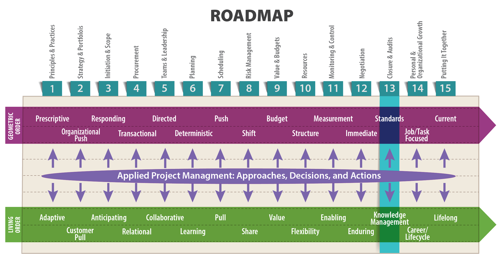
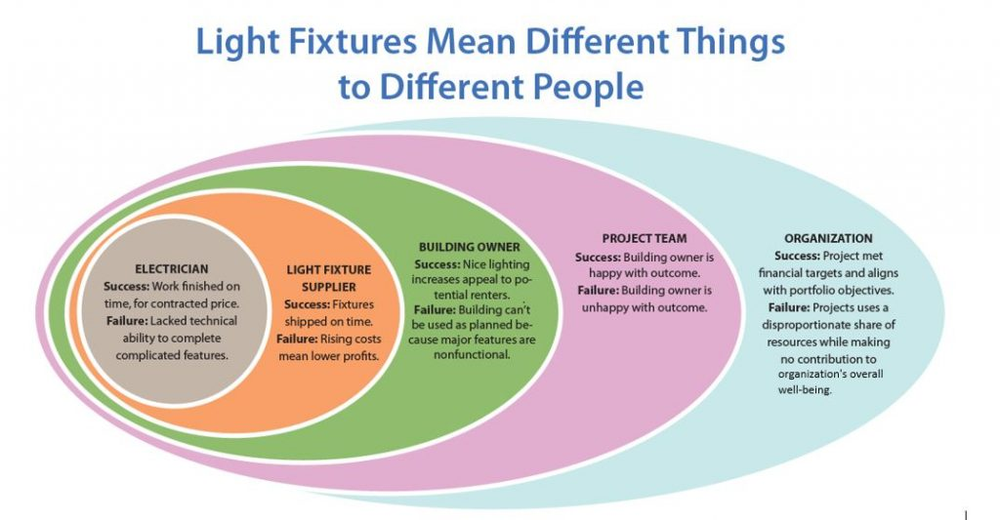
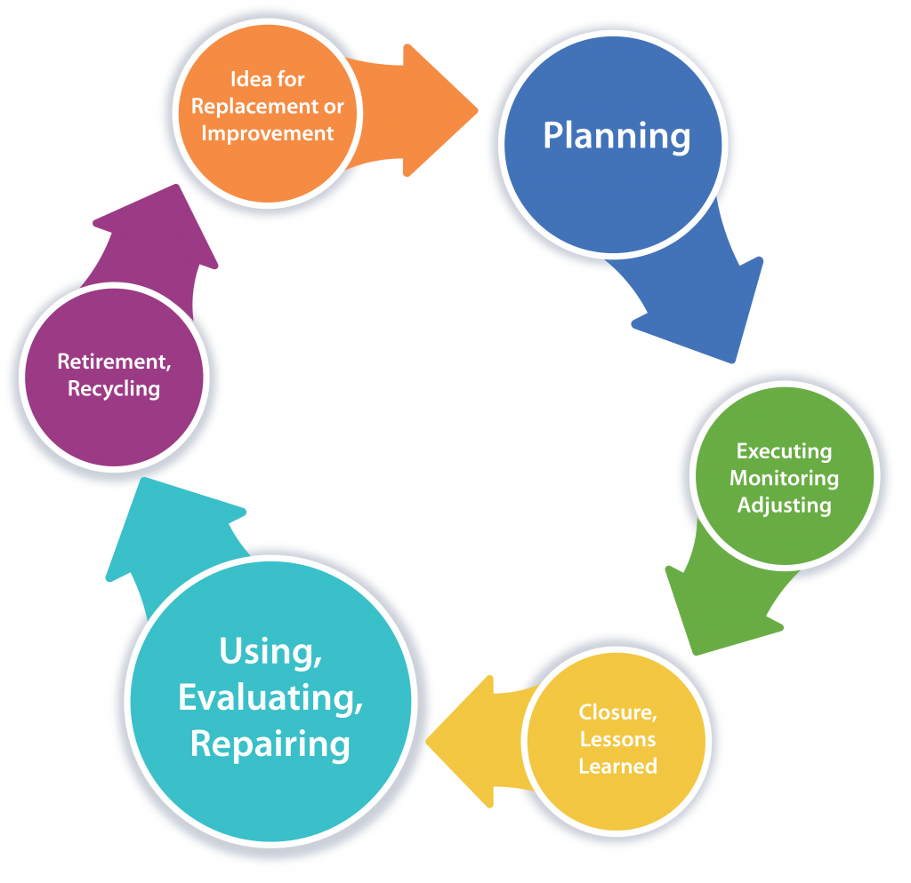

Experts often possess more data than judgment.
—Colin Powell, Secretary of State (Harari 2003)

Objectives
After reading this lesson, you will be able to
The Big Ideas in this Lesson
Many little things can go wrong in a project, but as long as you get the fundamentals right and keep them on target, a project is likely to achieve substantial success. As you’ve learned throughout this book, the best way to get the fundamentals right is to collaborate with stakeholders to create a comprehensive, realistic plan, while also remaining adaptable to the inevitable living order changes that will come your way. But just because you have the big things right at the beginning of a project doesn’t mean they’ll stay that way. Throughout the life of a project, you need to stop, look, and listen. That is, you need to stop periodically to conduct mid-project reviews/audits; look at the data about scope, quality, and schedule; and listen to the words of team members. Regular stop-look-and-listen breaks will provide essential insights into the current state of your project, and its prospects for the future.
Even if you’re working on a project that seems identical to others you’ve worked on in the past, you need to stay alert to the possibility that the ground could suddenly shift beneath your feet. And the only way to know if that’s happening is to regularly stop, look and listen. Or to use the words of Andrew Grove, CEO of Intel from 1997 to 2005, you need to maintain a “guardian attitude” toward all your projects, cultivating a constant level of paranoia about what you might not know about your project (1999, 3). In particular, Grove argues, you need to be paranoid about strategic inflection points, which can upend even the best laid plans. In his book Only the Paranoid Survive, he explains the dangers strategic inflection points pose to entire organizations, although much of what he says can apply equally well to individual projects:
A strategic inflection point is a time in the life of a business when its fundamentals are about to change. That change can mean an opportunity to rise to new heights. But it may just as likely signal the beginning of the end.
Strategic inflection points can be caused by technological change but they are more than technological change. They can be caused by competitors but they are more than just competition. They are full-scale changes in the way business is conducted, so that simply adopting new technology or fighting the competition as you used to may be insufficient. They build up force so insidiously that you may have a hard time even putting a finger on what has changed, yet you know that something has.
Let’s not mince words: A strategic inflection point can be deadly when unattended to. Companies that begin a decline as a result of its changes rarely recover their previous greatness.
But strategic inflection points do not always lead to disaster. When the way business is being conducted changes, it creates opportunities for players who are adept at operating in the new way. This can apply to newcomers or to incumbents, for whom a strategic inflection point may mean an opportunity for a new period of growth. (Grove 1999, 3-4)
Drawing on his many years of experience in the semiconductor business, Grove argues that the people best positioned to detect strategic inflection points are middle managers:
In middle management, you may very well sense the shifting winds on your face before the company as a whole and sometimes before your senior management does. Middle managers—especially those who deal with the outside world, like people in sales—are often the first to realize that what worked before doesn’t quite work anymore; that the rules are changing. They usually don’t have an easy time explaining it to senior management, so the senior management in a company is sometimes late to realize that the world is changing on them—and the leader is often the last of all to know. (Grove 1999, 21-22)
As a project manager, the best way for you to sense those shifting winds is to practice regular stop-look-and-listen breaks. You might detect strategic inflection points in your industry—and if so, you can use what you’ve learned to make your case to upper management. But the fact is you are more likely to detect strategic inflection points in your individual projects, which, taking our inspiration from Grove, we define here as a time in the life of a project when its fundamentals are about to change. Your goal, as a project manager, is to detect strategic inflection points in your projects earlier enough to allow you time to adapt and adjust. The best way to make sure that happens is to conduct regular project audits.
To stay in good health, it’s important to monitor some basics every day, perhaps by checking your weight or wearing a fitness monitor to make sure you get enough exercise. But sometimes you need to schedule a full workup to get external insights from a knowledgeable medical professional. The same is true of technical projects. Even if you have implemented reliable monitoring systems designed to alert you to any serious problems, as recommended in Lesson 11, every now and then you need to dive deeper into your project via an audit so that you can learn everything you need to know—the good, the bad, the ugly, and the unexpected.
So what exactly is a project audit? It is a deep investigation into any or all aspects of a project, with the aim of enabling stakeholders to make fully informed decisions about the project’s future. An audit can provide a focused, objective review of part or all of a project.
Audits can be relatively informal or formal. An informal audit is a relatively quick evaluation of a project, as when a new project manager attempts to take stock of a project by talking to everyone involved, and trying to learn as much as possible about the project objectives. A formal audit is more systematic, and is typically conducted by someone external to the project, or even, depending on the scope of the audit, external to the organization.
The ultimate goal of any audit is to generate actionable intelligence that can be used to improve the project or, when necessary, justify shutting it down. This intelligence is usually presented in the form of an audit report, which typically contains an explanation of the context of the audit, including the overall focus or any important issues; an analysis of data, interviews, and related research compiled during the audit; action-oriented recommendations; and, in some cases, lessons learned and possibly one or more supporting appendices.
In some organizations, audits or formal project reviews are conducted at the end of certain phases to determine if the project is worth continuing or if the project plan requires significant changes before the team moves forward. An audit can be used to
Issues that could be addressed in an audit include
In addition to auditing individual projects, it’s a good idea to conduct regular audits of your team. And be sure to include yourself, as the project manager, in the audit. Few people like being formally evaluated in their work, but you can minimize the negative feelings by conducting team audits often and routinely, so people see them as simply part of their job, and not as a targeted attempt to undermine them.
Brian Price (see “From the Trenches,” later in this lesson) has the following suggestions for anyone conducting a team audit:
Anonymous surveys of the team are one way to conduct a team audit. This article from Slate describes a survey app that works similar to a dating app, allowing people to swipe left or right to rate their own performance, as well as the performance of team members and their managers: http://www.slate.com/articles/business/the_ladder/2016/06/can_new_app_tinypulse_disrupt_performance_reviews.html.
Whatever survey method you choose, make sure your team sees you use the information obtained from the survey to improve the team’s performance. Otherwise they’ll lose confidence in future team audits, and in you as a project manager. Team audits can address individual “burn-out” issues and help not only individual performance but also team retention.
Different organizations have different auditing procedures, but the heart of any audit is listening to the opinions of the people involved in the project via interviews or surveys. According to Todd C. Williams, author of Rescue the Problem Project,
People are the critical piece in determining a project’s success or failure. They approve the inception, allow scope creep, define the technical solution, and levy constraints. What are the team’s dynamics? Who are the sponsors? What are their expectations? What is the leadership’s strength? What do these people think is wrong with the project? Does the team have the right skills? What would the team do to fix the project? The answers to these questions lead to more questions and eventually point to the root problems…. In other words, team members know the problems and their accompanying resolutions; someone just needs to ask them. Therefore, the people involved in a project are the best place to start an audit. (2011, 35)
Audits provide an excellent opportunity to learn and assess. They also provide a safe opportunity to ask the question: Should we continue this project (with or without modifications) or should we terminate it? When conducted routinely—and always with the guardian attitude recommended by Andrew Grove—they allow for a periodic timeout in which the team steps back to view their progress from a higher perspective, focusing on quality, schedule, cost, resources, and generally viability. An audit should result in some kind of report summarizing the audit findings, but generally speaking, you should avoid viewing an audit as an opportunity for excessive documentation of the past. Instead, think of an audit as an opportunity to pull from the desired ends of the project to the current state, asking some essential questions:
Organizations vary in their approach to audits. Some conduct audits routinely on all major projects. Others reserve audits for projects that appear to be heading for trouble. In other organizations, audits are conducted routinely only for certain types of projects. Whatever approach your organization takes, it’s essential to structure and conduct an audit in a manner appropriate to the project and to the people and organizations involved. In particular, you need to be sensitive to the culture of the project team itself, so as not to alienate the people you will be relying on to give you accurate information about the project.
Organizations that conduct regular, structured assessments of all projects tend to create a safer, more open environment for meaningful, helpful project reviews and associated follow-up action. Sometimes even simply using the term “project review” instead of “audit” can make the activity seem less threatening. Also, if reviews are conducted for all projects, project managers and team members are less likely to feel under attack during a project audit, as they understand this is part of business as usual. This can build a culture that values open, frank review, discussion, and collaborative problem-solving.
Make sure stakeholders see the audit as an attempt to learn about the project, rather than a blame-seeking investigation. A professional, systematic approach, in which you listen carefully and respectfully to all parties, will go a long way toward calming anxious participants. The more informed people are about the planning and delivery of an audit, and the more opportunities they have to offer input, the more helpful the audit results will be.
A project auditor is the person responsible for leading an audit or review. Ideally, the project auditor is an outsider who is perceived by all stakeholders to be fair and objective. He or she should have excellent listening skills and broad-based knowledge of the organization or industry. It’s helpful to use an audit team consisting of peers from other projects. This can help ensure that the team under review feels that their auditors understand the constraints they face in executing the project; they’ll engage with the auditing team as peers, rather than a critical body. The project teams can return the favor by critiquing the auditors’ project at another stage. If an audit is undertaken by an external party, it is important that the audit team is respected by the team under review. This helps diffuse any feelings of being unfairly criticized.
An important key to a successful audit is an audit leader who is trusted and respected by all stakeholders, who is believed to have the best interests of the organization at heart, and who has broad-based experience in the industry. In some situations, to avoid the appearance of a conflict of interest, it’s best to choose as the auditor an impartial person, with no direct involvement in the project. As Michael Stanleigh explains, an auditor who is unconnected to the project makes it possible for team members and other stakeholders to be completely candid:
They know that their input will be valued and the final report will not identify individual names, rather it will only include facts. It is common that individuals interviewed during the project audit of a particularly badly managed project will find speaking with an outside facilitator provides them with the opportunity to express their emotions and feelings about their involvement in the project and/or the impact the project has had on them. This “venting” is an important part of the overall audit. (n.d.)
However, to avoid the appearance that the point of the audit is designed to catch the team doing something wrong, sometimes it’s better to allow the team to review itself. This approach can encourage people to step forward to share what they’ve learned about the project, both good and bad. After all, the ultimate point of an audit or project review is to help the organization learn about the project.
Because an audit is primarily a learning experience, the ideal audit leader has the ability to listen to what other people are saying, as well as to what they are not saying, looking beneath the surface for hidden currents that are shaping the project’s performance. The audit leader should then be able to weave all the information obtained in the audit into a coherent picture of the project’s current status and future prospects.
In addition to these formidable personal requirements, an audit leader should be granted the ability to operate independently, with the authority to report audit results without fear of recrimination. He or she has to be willing to deliver bad news if necessary, and must have an appropriate forum to do so—whether in formal reports, presentations, or emails.
Todd C. Williams uses the term recovery manager to refer to a consultant who is brought in from the outside to audit a failing project, and, if possible, steer it to a successful conclusion. In his view, selecting the right recovery manager is the essential first step:
Selecting the right recovery manager is critical. Avoid choosing someone currently involved with the project, as people involved in the project are too close to see the issues and may be perceived as biased by the stakeholders. At a minimum, the person doing the audit should be someone outside the extended project and unassociated with the product. An objective view is critical to a proper audit and reducing any preconceptions of a solution. The ideal candidate is a seasoned, objective project manager who is external to the supplier and customer, has recovery experience, and a strong technical background (for the conversations with the technical team). Compare this with hiring a financial auditor. No one would ever recommend engaging someone internal or with no experience, as it would create too high a chance of someone not believing the audit results…. Above all, recovery managers need to be honest brokers—objectivity is paramount. They cannot have allegiance to either side of the project. (17-19)
Based on the audit’s findings, the team could decide to proceed per current plans, revise the plan (i.e., tasks and sequence), revise the schedule, revise the budget, revise the scope, bring in new team members or remove team members, or terminate the project. A project audit can also investigate whether a team is adding or losing members too frequently, causing the project to veer from one goal to another. Sometimes only a few quick, easy-to-implement course corrections are required. But if large-scale changes are necessary, you will need to agree on a change management strategy that will minimize resistance to the necessary alterations “through the involvement of key players and stakeholders” (Business Dictionary n.d.).
Resistance to any kind of change is often driven by fear. And as Vijay Govindarajan and Hylke Faber explain, we are never our best selves when we are afraid:
When we’re in the grip of our fears, we are at least 25 times less intelligent than we are at our best. We don’t think straight. And we’ll most likely reject anything that takes us out of our comfort zone. This reaction is well known today as the “amygdala hijack.” It’s when our more primitive, or “crocodilian” brain wired for survival takes over. When our crocodiles are active, we are resistant to change and are operating from a fear of survival. Our crocodiles are trying to keep us safe, at the cost of innovation and change. (2016)
Govindarajan and Faber argue that the best way to drain fear of its power is to speak in a straightforward and matter-of-fact way about team members’ anxieties. They also recommend using humor when appropriate, and projecting an aura of confidence and courage.
Successfully correcting course in a project presumes that you and your team are effective decision-makers. So you’d be wise to learn all you can about decision-making throughout your career. Here are a few resources to help you get started:
If an audit reveals the painful truth that it’s time to terminate a project, then it’s important to realize that this is not necessarily a bad thing:
Canceling a project may seem like a failure, but for a project to be successful, it must provide value to all parties. The best value is to minimize the project’s overall negative impact on all parties in terms of both time and money. If the only option is to proceed with a scaled-down project, one that delivers late, or one that costs significantly more, the result may be worse than canceling the project. It may be more prudent to invest the time and resources on an alternate endeavor or to reconstitute the project in the future using a different team and revised parameters. (Williams, 8)
When considering terminating a project, it’s helpful to ask the following questions:
Determining whether to terminate a project can be a very difficult decision for people close to a project to make. As the Figure 13-1 illustrates, your perspective on a project has a huge effect on your judgment of its overall success. That is why a review conducted by an objective, external auditor can be so illuminating.

Project closure is traditionally considered the final phase of a project. It includes tasks such as
Seen from a geometric order perspective, these tasks do mark the definitive end of a project. However, in the broader, living order vision of a project’s life cycle, project closure often merely marks the conclusion of one stage and the transition to another stage of the project’s overall life cycle, as shown in Figure 13-2. Seen from this perspective, project closure is actually an extension of the learning and adjusting process that goes on throughout a project. This is true in virtually all industries, although the actual time it takes to cycle through from a plan to the idea for the next version can vary from weeks to years.
The close-out meeting is an opportunity to end a project the way you started it—by getting the team together. During this important event, the team should review what went well, what didn’t go well, and identify areas for improvement. All of this should be summarized in the final close-out report. A final close-out meeting with the customer is also essential. This allows the organization to formally complete the project and lay the groundwork for potential future work.
The close-out report provides a final summary of the project performance. It should include the following:

Exactly where your work falls in the project’s life cycle depends on your perspective as to what constitutes “the project” in the first place. The designers and constructors of a building might consider the acceptance of the building by the owner as project closure. However, the results of the project—that is, the building—lives on. Another contractor might be hired later to modify the building or one of its systems, thus starting a new project limited to that work.
If project closure is done thoughtfully and systematically, it can help ensure a smooth transition to the next stage of the project’s life cycle, or to subsequent related projects. A well-done project closure can also generate useful lessons learned that can have far-reaching ramifications for future projects and business sustainability. The closeout information at the end of a project should always form the basis of initial planning for any future, similar projects.
Although most project managers spend time and resources on planning for project start-up, they tend to neglect the proper planning required for project closure. Ideally, project closure includes documentation of results, transferring responsibility, reassignment of personnel and other resources, closing out work orders, preparing for financial payments, and evaluating customer satisfaction. Of course, less complicated projects will require a less complicated close-out procedure. As with project audits, the smooth unfolding of the project closure phase depends to a great degree on the manager’s ability to handle personnel issues thoughtfully and sensitively. In large, on-going projects, the team may conduct phase closures at the end of significant phases in addition to a culminating project closure.
Brian Price, a graduate of the UW Master of Engineering in Professional Practice program (a precursor of the Masters in Engineering Management program), is the former chief power train engineer for Harley-Davidson. He teaches engine project management in the UW Master of Engineering in Engine Systems program. In his twenty-five years managing engine-related engineering projects, he had ample opportunity to see the benefits of good project closure procedures, and the harm caused by bad or non-existent project closure procedures. In his most recent role as a professor of engineering, he tries to encourage his students to understand the importance of ending projects systematically, with an emphasis on capturing wisdom gained throughout a project.
Brian shared some particularly insightful thoughts on the topic in an interview:
The hardest parts of any project are starting and stopping. Much of project management teaching is typically devoted to the difficulties involved in starting a project—developing a project plan, getting resources in place, putting together a team, and so on. But once a project is in motion, it gains momentum, taking on a life of its own, making it difficult to get people to stop work when the time comes. It therefore requires some discipline to get projects closed out in a structured way that ties up all the loose ends. Close out checklists can help. (For one example, see Figure 14.2 in Project Management: The Managerial Process, by Erik W. Laron and Clifford F. Gray.) The close-out also needs to wrap up final budgets and reallocate resources.
Generally speaking, the end of a project is a perfect time to reflect on what went well and what could be done differently next time. The After Action Review (AAR) process, derived from military best practice, is very helpful. It focuses on three distinct, but related areas:
To learn more about the AAR process, see this in-depth explanation in the Harvard Business Review: https://hbr.org/2005/07/learning-in-the-thick-of-it.
The reflections at the end of a project are a great opportunity to capture key learning, whether technical, managerial, or related to project execution. This can then be codified for dissemination and application on other projects. Continually building a knowledge base is essential for improving techniques and best practice. This never comes easy, as it can be seen as bureaucratic report writing, so as a project manager you will need to insist on it. Keep in mind that the point of building a knowledge base is not, of course, to improve the project you are closing out, but to improve the many as yet undetermined projects that lie ahead.
Focus on what it took to deliver the project (time, resources, tasks, budgets, etc.) compared to the original plan. This information is essential in planning the next project. After all, the main reason projects fail is because they were inadequately planned, and the main reason they are inadequately planned is because the planners lacked complete planning information. Your best source of good planning information is wisdom gained from recent, similar projects. Thus, it is essential to capture and disseminate that information at the close of every project.
Finally, don’t discount the importance of honoring the achievements of the project team. The project closure stage is a good time to build morale with an end-of-project celebration, especially when a close-knit team is about to be dispersed into other projects. People need a coherent conclusion to their work.
Unfortunately, most organizations pay little attention to project closure. This is partly due to basic human psychology—people get excited by the next opportunity. They tend to drift off to the next interesting thing, and something new is always more interesting than something old. But a deeper problem is that organizations tend to be more interested in what the project is delivering, rather than the knowledge and wisdom that allows the company to deliver the project’s value. The real worth of an organization is the knowledge that allows it to continue generating value. For Harley Davidson, for example, that would be its collective knowledge of how to make motorcycles. A well-conducted project closure adds to that knowledge, transforming specific experience into wisdom that the organization can carry forward to future undertakings (2016).
In their book Becoming a Project Leader, Laufer et al. explain the importance of a tolerance for failure. Projects will occasionally close or radically change course, but that doesn’t mean that the team members who worked on such projects were ineffective. In fact, coping with such challenges can help individuals and teams be much more efficient. In his capacity as a project manager for the U.S. Air Force’s Joint Air-to-Surface Standoff Missile, Terry Little’s response to a failed missile launch was not to scold the contractor, Lockheed, for its failure but rather to ask how he could help. Larry Lawson, project manager at Lockheed, called Terry’s response “the defining moment for the project . . . . Teams are defined by how they react in adversity—and how their leaders react. The lessons learned by this team about how to respond to adversity enabled us to solve bigger challenges.” As Laufer et al. articulate, “By being a failure-tolerant leader, Terry Little was able to develop a culture of trust and commitment-based collaboration” (2018).
Here are a few practical tips related to project audits and project closure:
Business Dictionary. n.d. “Change management.” BusinessDictionary.com. Accessed June 5, 2018. http://www.businessdictionary.com/definition/change-management.html.
Govindarajan, Vijay , and Hylke Faber . 2016. “Managing Uncertainty: What FDR Knew About Managing Fear in Times of Change.” Harvard Business Review, May 4. https://hbr.org/2016/05/what-fdr-knew-about-managing-fear-in-times-of-change.
Grove, Andrew S. 1999. Only the Paranoid Survive: How to Exploit the Crisis Points That Challenge Every Company . New York: Doubleday.
Hammon, John S., Keeney, Ralph L. Keeney, and Howard Raiffa. 2015. Smart Choices: A Practical Guide to Making Better Decisions. Cambridge: Harvard Business Review Press.
Harari, Oren. 2003. “18 Lessons: A Leadership Primer, Quotations from Colin Powell.” Absolute Advantage. http://www.csun.edu/~alliance/Wellness_Coreteam/Absolute%20Advantage%20Magazine/Articles/Collin%20Powell%2018_lessons.pdf.
Laufer, Alexander, Terry Little, Jeffrey Russell, and Bruce Maas. 2018. Becoming a Project Leader: Blending Planning, Agility, Resilience, and Collaboration to Deliver Successful Projects. New York: Palgrave Macmillan.
Price, Brian. 2007. Lecture slides for Engine Project Management, week 13, University of Wisconsin-Madison. Madison, May 5.
—, interview by Jeff Russell and Ann Shaffer. 2016. Technical Project Management (September 2).
Scrum.org. n.d. “What is a Sprint Retrospective?” Scrum.org. Accessed July 29, 2018. https://www.scrum.org/resources/what-is-a-sprint-retrospective.
Stanleigh, Michael. n.d. “Undertaking a Successful Project Audit.” Business Improvement Architects. Accessed June 2, 2018. https://bia.ca/undertaking-a-successful-project-audit/.
The Economist. 2009. “Genchi genbutsu.” The Economist, October 13. https://www.economist.com/news/2009/10/13/genchi-genbutsu.
Williams, Todd C. 2011. Rescue the Problem Project: A Complete Guide to Identifying, Preventing, and Recovering from Project Failure. New York: AMACOM.